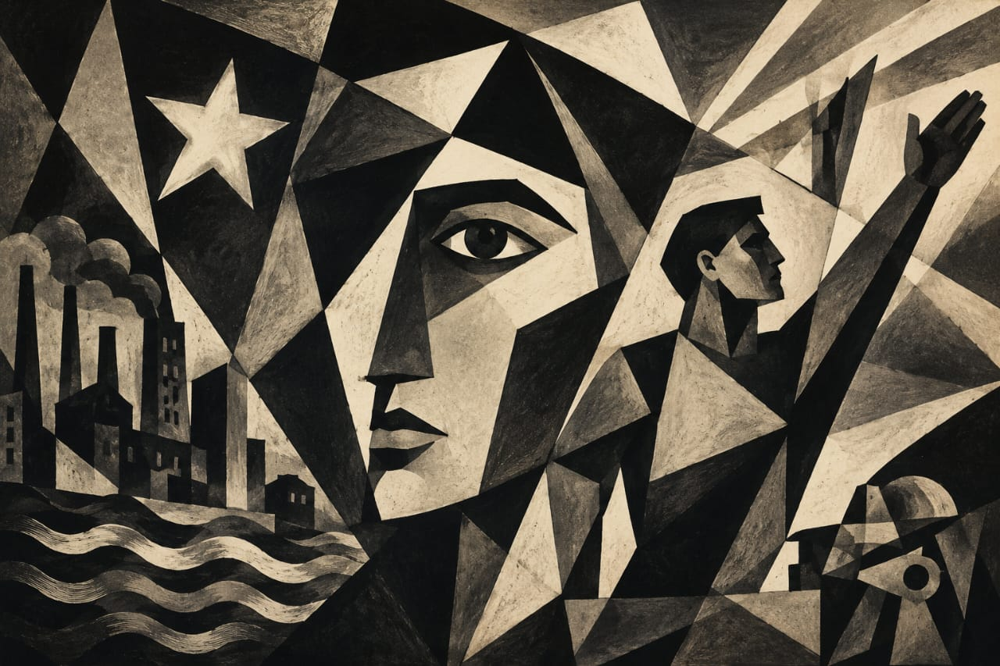
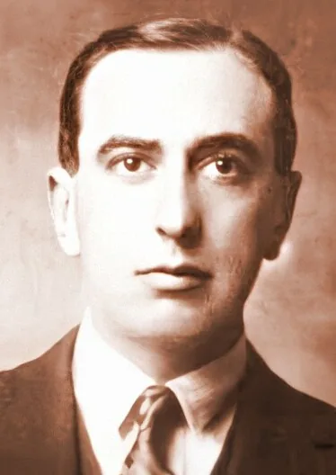
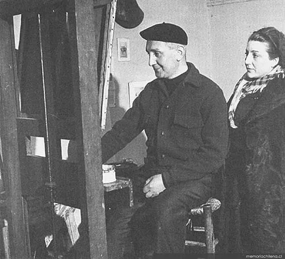
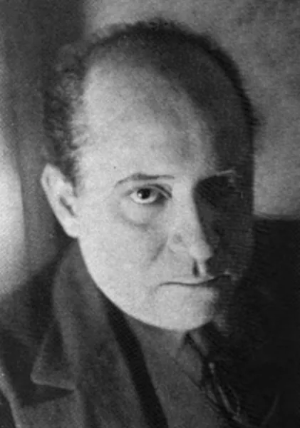

Contexto histórico de Chile (1920–1930)
Chile atravesó cambios políticos y sociales durante los años veinte. La Constitución de 1925 modificó la organización del país y la crisis mundial de 1929 afectó una economía dependiente de las exportaciones.
En literatura, Huidobro difundió el creacionismo, cuyas bases eran anteriores a 1920. En pintura, el Grupo Montparnasse y la crítica de Jean Emar cuestionaron el academicismo. Estas búsquedas ampliaron la libertad de creación y el intercambio con otras vanguardias.
Línea de tiempo
Chile y el Creacionismo.
1921: Huidobro publica La creación pura y continúa difundiendo su propuesta creacionista en el circuito internacional.
1922: Huidobro expone poemas pintados en París. 1923: el Grupo Montparnasse realiza su primera exposición en Santiago.
1925: se promulga la nueva Constitución chilena. Huidobro publica Manifestes, con sus ideas sobre la creación artística.
1927: Acario Cotapos comienza Voces de gesta, proyecto musical que no completará satisfactoriamente en su totalidad.
1929: la Gran Depresión empieza a afectar la economía chilena, especialmente sus exportaciones.
1930: se funda la Facultad de Bellas Artes de la Universidad de Chile, con participación de artistas ligados a la renovación.
Artistas y referentes

fue el principal impulsor del creacionismo. Defendió la autonomía del poema y la capacidad del poeta para inventar realidades. Manifestes (1925) reúne textos importantes de su pensamiento estético.

fue uno de los integrantes fundadores del Grupo Montparnasse. Participó en la renovación pictórica mediante el diálogo con las nuevas propuestas europeas.

integró el Grupo Montparnasse y contribuyó a ampliar las posibilidades expresivas de la pintura chilena, alejándose de convenciones académicas.

fue un compositor vinculado con la experimentación y los circuitos artísticos internacionales. Sus búsquedas permiten reconocer la renovación musical chilena durante el período.
Creacionismo
El creacionismo sostiene que el poema puede crear una realidad propia, en lugar de limitarse a describir lo que existe. Huidobro desarrolló esta propuesta desde la década de 1910 y la difundió durante los años veinte. En Manifestes (1925) reflexionó sobre el lenguaje y la creación. La importancia del movimiento está en atribuir al poeta un papel activo: combinar palabras e imágenes para producir un mundo autónomo.
Experimentación poética y visual
La experimentación modifica las relaciones entre palabras, imágenes y formas. Huidobro exploró asociaciones inesperadas y la presentación visual de los poemas. Sus poemas pintados, expuestos en París en 1922, permiten observar cómo la escritura puede dialogar con la pintura. La innovación no consistía únicamente en abandonar la rima: también implicaba repensar cómo se construye y se percibe una obra.
Grupo Montparnasse
El Grupo Montparnasse se presentó en Santiago en 1923. Sus integrantes propusieron nuevas soluciones para el color, la composición y la expresión, en diálogo con experiencias europeas y con el legado de Cézanne. Luis Vargas Rosas, Henriette Petit y José Perotti estuvieron entre sus fundadores. Su exposición generó controversias y se convirtió en un espacio concreto de discusión sobre el arte moderno.
Crítica de arte y circulación de ideas
Las nuevas obras necesitaron espacios donde pudieran mostrarse, explicarse y discutirse. Jean Emar utilizó el diario La Nación para dar a conocer artistas, exposiciones y debates internacionales. Su defensa del Grupo Montparnasse muestra que la vanguardia también se construyó mediante la crítica y la prensa. Estos textos ayudaron al público a interpretar propuestas distintas de las que conocía.
¿Cómo interpretar esta vanguardia hoy?
Compará las ideas de la época con manifestaciones culturales actuales y construí una mirada propia.